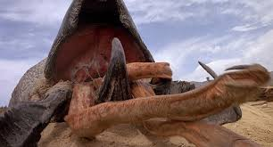

Gusanos de tierra
Primer encuentro: 05/23/1883
Ultimo encuentro: 08/11/2023
Contencion: Zona aislada, posibles zonas sin controlar
Nv de peligro:3 (Neutral)
Estado Actual: Vivo
["La pelicula tremors lanzada en el año de 1990 muestra a un grupo de habitantes de un pequeños pueblo enfrentarse a una especie de gusanos de tierra gigantes,
los cuales se guian usando las vibraciones en la tierra. Curiosamente en este caso la realidad supera a la ficcion pues durante el año 1883 en un pueblo llamado Sand Lake
se descubriria una criatura muy similar a las que se vieron en dicha pelicula, afortunadamente mientras esta tengan otra fuente de alimento diferente a los humanos
estas criaturas no atacaran.
Como se menciono anterior mente, esta clase de gusason de tierra se asemeja a las criaturas vistas en la saga tremors, aunque no se les a visto evolucionar o tener diferentes
fases como los de la pelicula, sin mencionar que la baba de estas cosas tiene propiedades de uso medicinal para la prevencion de daños en la piel.
Durante un tiempo se penso que las criaturas que habitaban en la ciudad de Sand Lake, ahora popular por el gran hotel que la organizacion creo para estar cerca de las criaturas y
ayudar al pueblo como parte de un acuerdo para poder estudiarlas y evitar la salida de informacion de estas, eran las unicas que existian en el mundo, pero desde 2023 se comenzaron a
dar reportes en un total de 3 partes del mundo de 3 paises diferentes a Estados Unidos los cuales aun no se han podido contener por la falta de poder de la organizacion en dichos paises.
Afortunadamente se logro evitar que esta informacion se lograra hacer publica antes de que llegara a oidos de todo el mundo."]